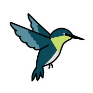

Containerfile

Built with Podman from
registry.access.redhat.com/hi/python:3.14.
Styled with PatternFly, Red Hat's enterprise design system.
# ── Stage 1: builder ───────────────────────────────────────────── # hummingbird python:3.14-builder has a shell and pip; it is the # purpose-built counterpart to the distroless runtime image. # Used only to run the generators — nothing else carries forward. # Uses default /tmp as working directory. FROM quay.io/hummingbird/python:3.14-builder AS builder # Install build-time Python dependencies RUN pip3 install --quiet pyyaml jinja2 # Build tools COPY --chown=65532:65532 build/ ./build/ # Jinja2 template (app machinery, read by build-faqs.py) COPY --chown=65532:65532 app/faqs/ ./app/faqs/ # Containerfile itself (read by generate-containerfile-page.py) COPY --chown=65532:65532 Containerfile ./ # Author content (YAML sources, read by build-faqs.py) COPY --chown=65532:65532 content/ ./content/ # generate-containerfile-page.py writes to app/containerfile.html # build-faqs.py writes to content/faqs.js RUN python3 build/generate-containerfile-page.py \ && python3 build/build-faqs.py # Author-facing files for the extras bundle. # Copied here (builder only) so they are not present in the runtime stage # except as part of the tarball — /srv/faq stays clean. COPY --chown=65532:65532 AUTHORING.md ./ COPY --chown=65532:65532 demo-kiosk.container ./ COPY --chown=65532:65532 download-libs.sh ./ COPY --chown=65532:65532 start.sh ./ # Bundle all author tooling into a single tarball for `podman cp` extraction. # content/faqs.js is excluded — authors generate it themselves after editing. # Uses python3 tarfile (stdlib) — tar is not available in this builder image. RUN python3 - << 'EOF' import tarfile, os WORKDIR = "/tmp" EXCLUDE = {"content/faqs/faqs.js"} MEMBERS = [ "build", "app/faqs", "content/faqs", "AUTHORING.md", "demo-kiosk.container", "download-libs.sh", "start.sh", ] def filter_fn(info): return None if info.name in EXCLUDE else info with tarfile.open(os.path.join(WORKDIR, "extras.tar.gz"), "w:gz") as tf: for member in MEMBERS: tf.add(os.path.join(WORKDIR, member), arcname=member, filter=filter_fn) EOF # ── Stage 2: runtime ───────────────────────────────────────────── # hummingbird python:3.14 — distroless, no shell, no package manager. # Runs as UID 65532. WorkingDir defaults to /tmp; overridden below. FROM quay.io/hummingbird/python:3.14 # Set WORKDIR before COPY so relative destinations resolve to /srv/faq. WORKDIR /srv/faq # App source — framework, styles, libraries, templates. # Single COPY; all files owned by runtime UID. # (.containerignore excludes generated artefacts from the build context) COPY --chown=65532:65532 app/ ./ # Generated Containerfile viewer page (derived from app source, belongs with app layer) COPY --from=builder --chown=65532:65532 /tmp/app/containerfile.html ./ # Author content — separate layer so different xattrs can be applied independently. # This entire tree can be replaced at runtime by a volume mount. COPY --from=builder --chown=65532:65532 /tmp/content/ ./content/ # Extras bundle — not part of the served app; lives at /extras/ for `podman cp`. # See AUTHORING.md for extraction instructions. COPY --from=builder --chown=65532:65532 /tmp/extras.tar.gz /extras/extras.tar.gz EXPOSE 8181 # serve.py (like python3 -m http.server) does not handle SIGTERM; SIGKILL stops it immediately. STOPSIGNAL SIGKILL # No shell in distroless — CMD must be JSON exec form. CMD ["python3", "/srv/faq/serve.py", "8181", \ "--directory", "/srv/faq"]